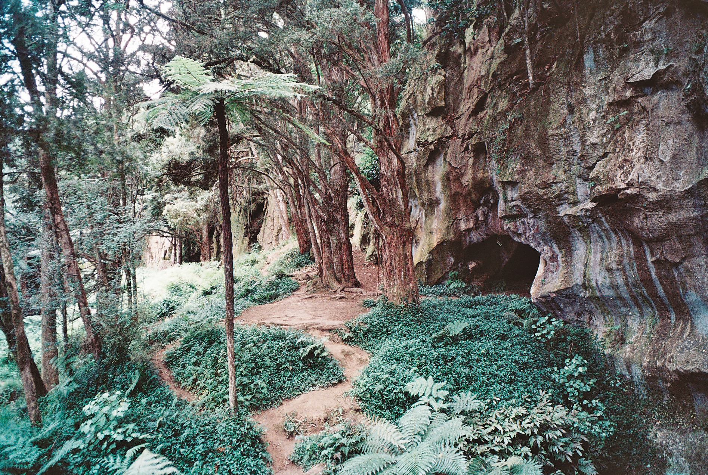
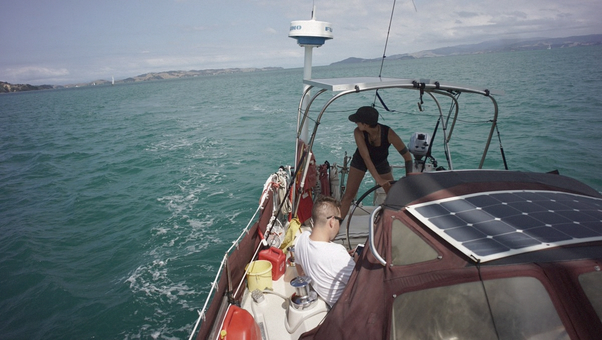
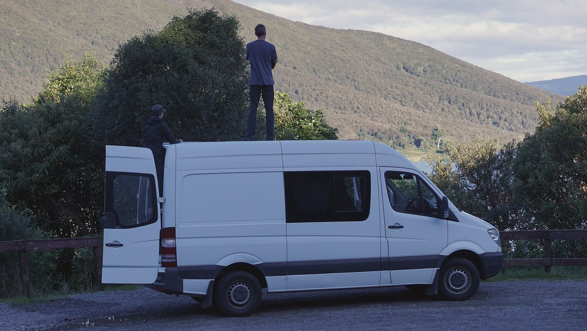
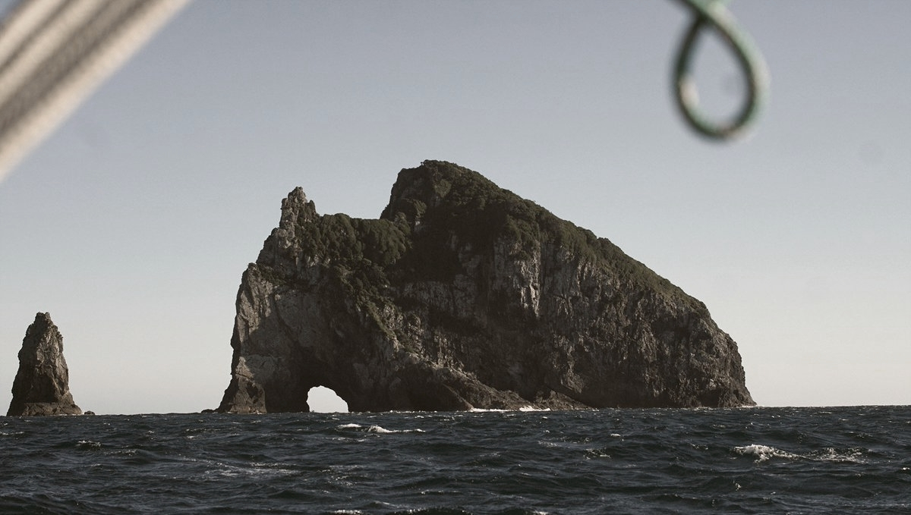
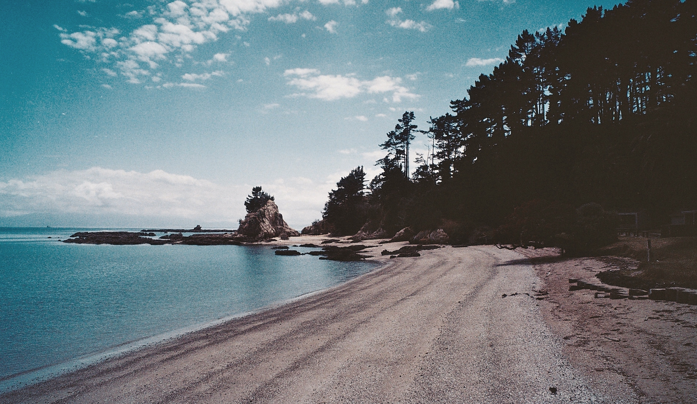
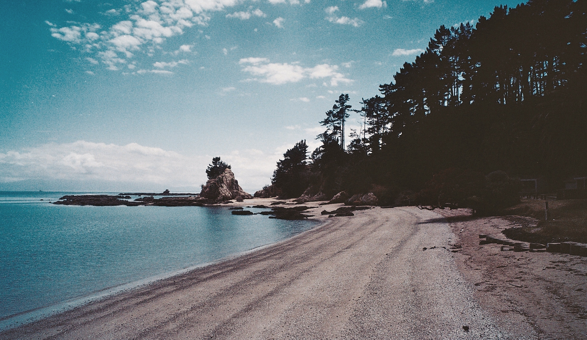

new zealand
In October 2017, we sailed to New Zealand from Vavau' in Tonga. The sail took 10 days. We aimed straight for Whangarei.
We stayed in the country for 9 months. We sailed down to Kawau Island and Pakatoa, and then stayed in Whangarei for a few months to haul Pino out to do repairs, and to paint the bottom. We re-did the windows that year, and changed Pino's steering from wheel to tiller. We also installed an AIS system, and had a new mainsail made (with a third reef) to navigate Japanese waters safely.
After our repairs, we tested our new sail and systems, cruised the east coast of the North Island and all the way up to Opua. We also visited Wellington, and other famous sites around the North Island by van with our friend Hamish.
We wrote some blog posts about our time there:
    
